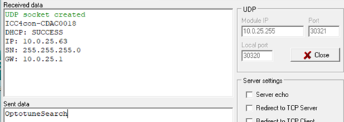
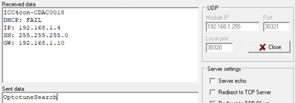

|
ICC4C
143-525-00
|
|
ICC4C
143-525-00
|
Ethernet communication supports both TCP and UDP protocol. However UDP protocol is dedicated for discovery and network configuration procedure. The standard communication with driver runs on TCP protocol. The Ethernet parameters can be configured within Board EEPROM system - ICC-4C supports DHCP and static IP. In case that DHCP is enabled but DHCP process fails (due to DHCP server absence), driver will fall back to static IP mode with configured IP address, subnet mask and gateway. Additionally, port numbers for TCP and UDP communication can be configured. For each protocol only one socket is available (single connection).
UDP messages:
OptotuneSearch -> discovery message. Driver will respond with its serial number and actual network configuration. This message can be sent to broadcast -> multiple response will be received.


Network config message -> network parameters can be easily updated when sent in following format.Configuraton will be applied only to driver with specified Serial number.
<SerialNumber>;DHCP:<0 or 1>;IP:<IP address value>;SN:<subnet mask value>;GW:<gateway value>;
For example:

In case that IP configuration message is received correctly by driver, the parameters will be applied to BoardEEPROM and device will be reset to new values. In case of IP addressing problem, there is still possibility to check/update the parameters in BoardEEPROM using USB interface.